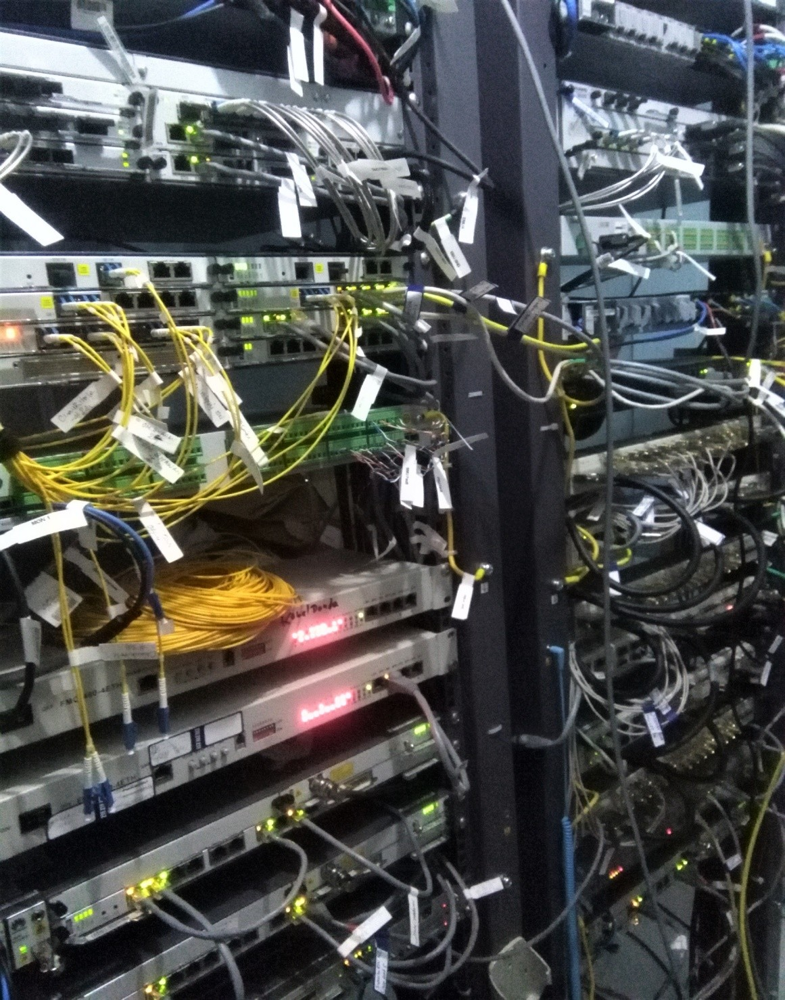
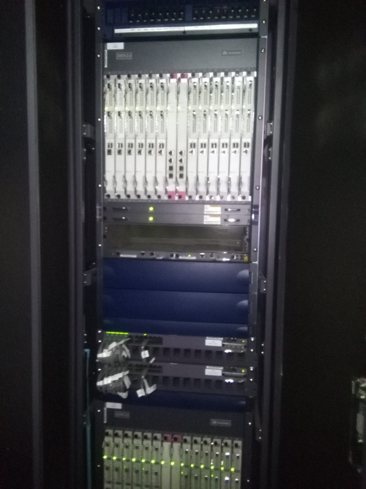
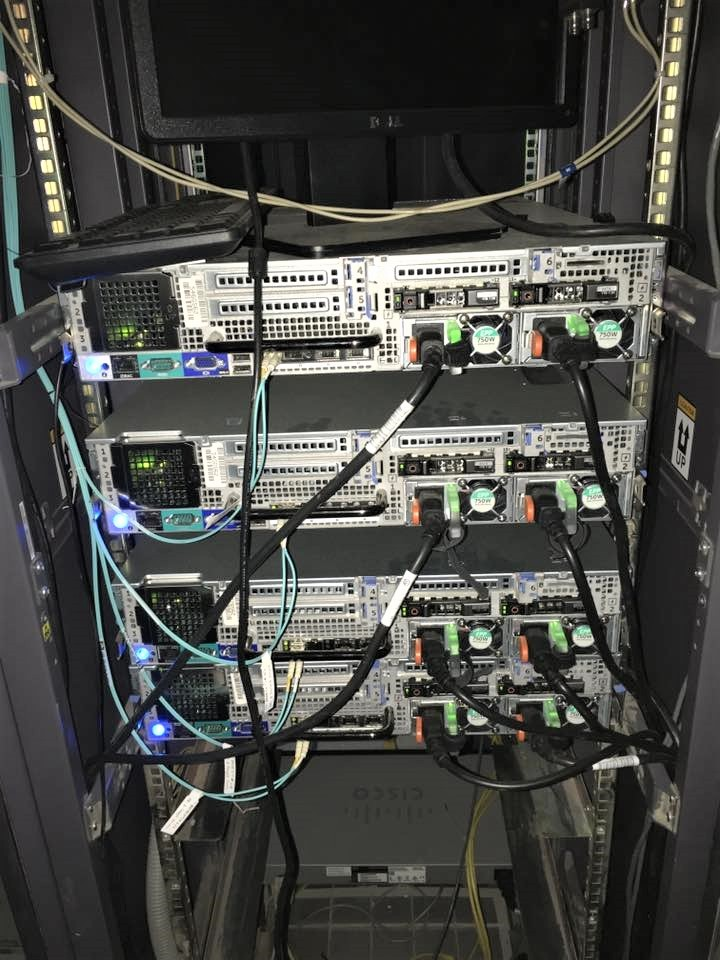
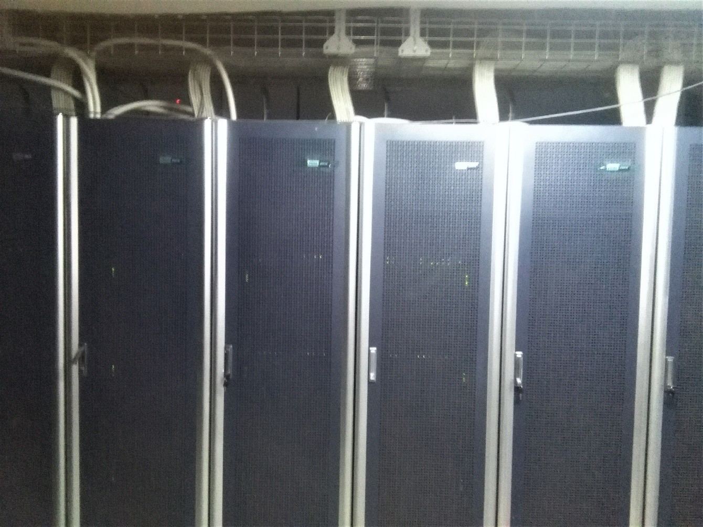

My Internship Journey in GSM Telecom Infrastructure
Nepal Telecom, Hetauda | September 2017 – December 2017 Role: Telecom & IT Intern




Overview
During my Bachelor of Science in Computer Science and Information Technology (BSc. CSIT),
I completed a three-month internship at Nepal Telecom, the national
telecommunications service provider of Nepal.
The internship focused on GSM Mobile Networking, where I gained hands-on
exposure to telecom infrastructure, mobile network architecture, and real-world
operational environments.
Why Nepal Telecom?
Nepal Telecom operates nationwide telecom infrastructure, serving both urban and remote
regions. Choosing Nepal Telecom allowed me to:
Understand large-scale telecom network operations
Work with GSM, PSTN, and data communication systems
Bridge theoretical networking knowledge with real-world implementation
Key Technologies & Concepts
GSM Network Architecture (BSS, NSS, BTS, BSC)
Mobile Switching & Call Routing
Frequency Bands (GSM 900 / 1800)
Control Channels (BCCH, CCCH, DCCH)
HLR, VLR, AUC, EIR Databases
Huawei & ZTE Telecom Equipment
PSTN & Mobile Network Interworking
Hands-on Exposure:
Observed GSM server management, switching systems, fiber optics, mobile tower operations,
and real-time telecom troubleshooting.
My Responsibilities
Observing GSM core network and base station operations
Assisting in server monitoring and maintenance
Understanding call flow between mobile stations and base stations
Supporting IT and transmission departments
Learning fiber optic management and telecom infrastructure setup
Challenges & Learning
Working in a live telecom environment helped me understand real operational challenges:
Network congestion and capacity limitations
Subscriber management at scale
Importance of redundancy and fault tolerance
Impact of infrastructure planning on service quality
Key Takeaways
Strong foundation in telecom networking principles
Practical exposure to national-scale infrastructure
Improved problem-solving and analytical skills
Better understanding of real-world IT operations
Skills Gained
GSM NetworkingTelecom InfrastructureNetwork OperationsServer MonitoringFiber OpticsIT Support
Conclusion
This internship was a turning point in my technical career. It transformed theoretical
knowledge into practical understanding and strengthened my interest in
telecom infrastructure, system administration, and networking.
The experience laid a strong foundation for my professional journey in IT and
telecommunications.